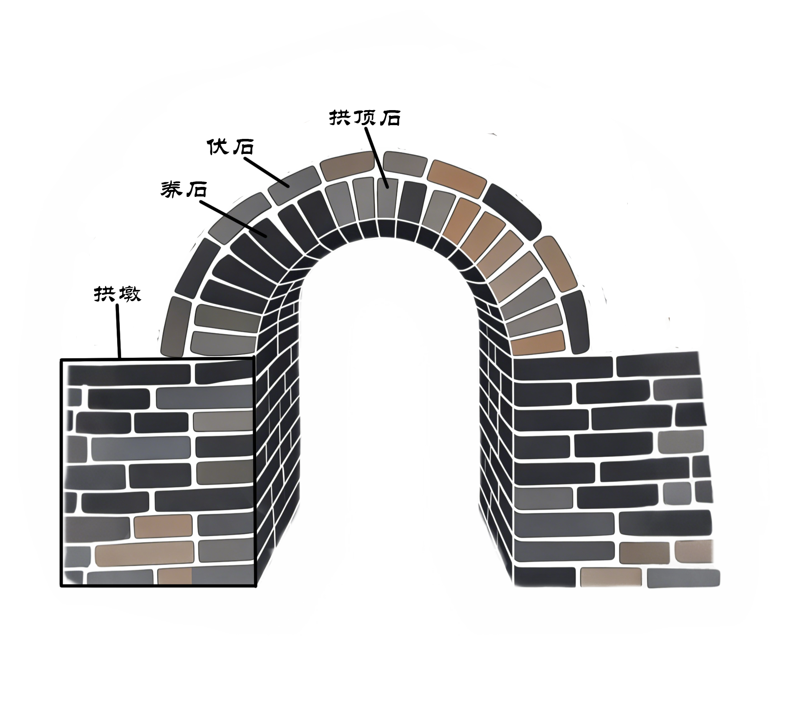
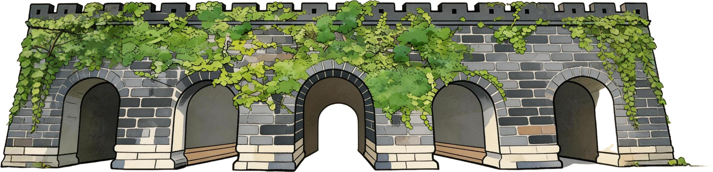
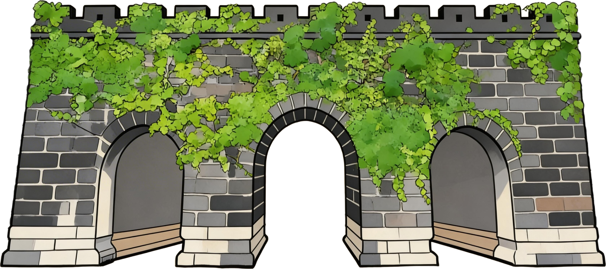
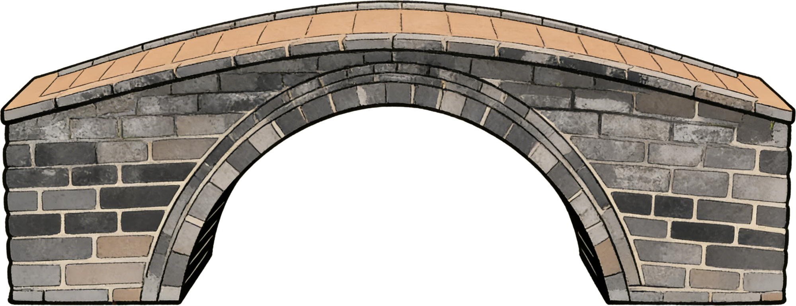
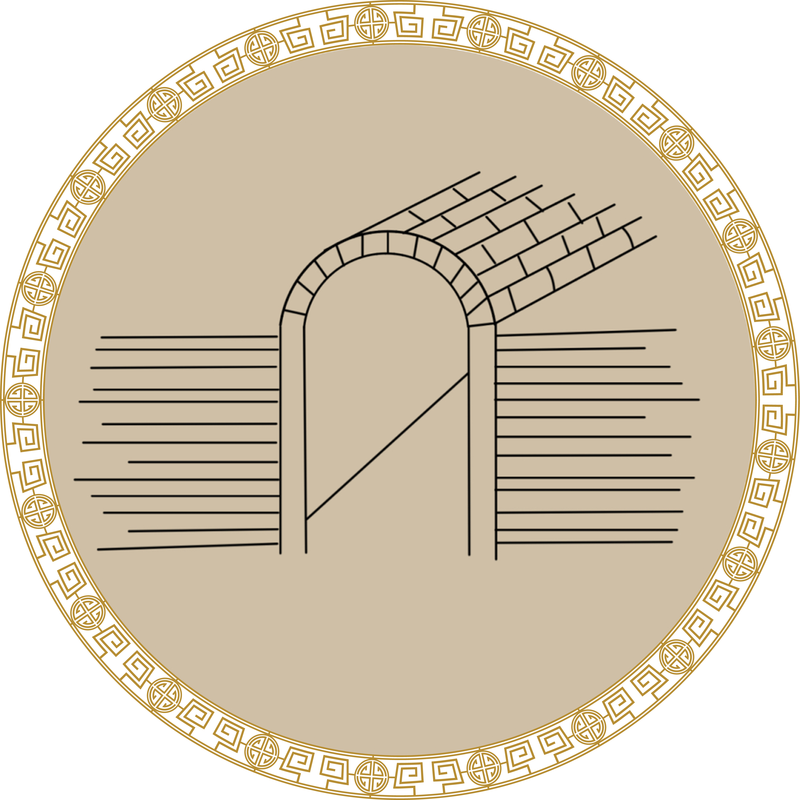
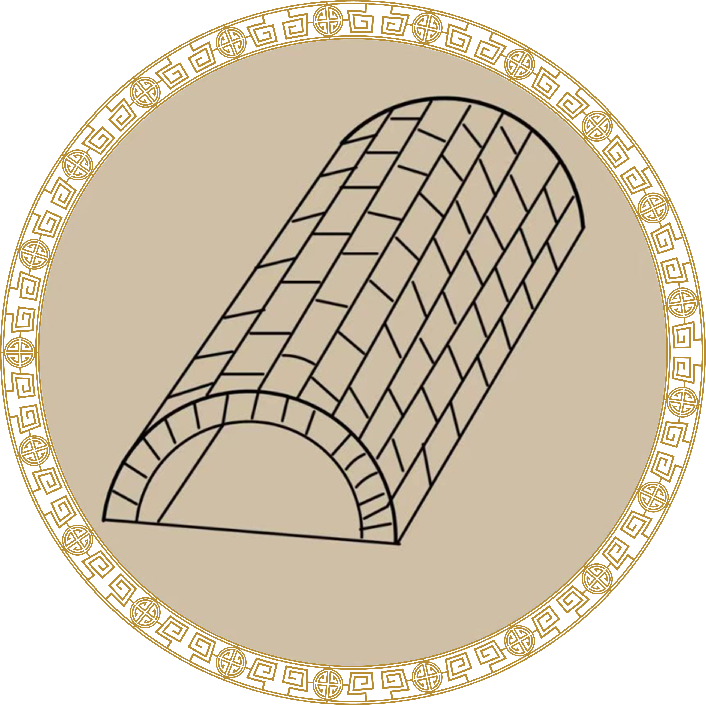
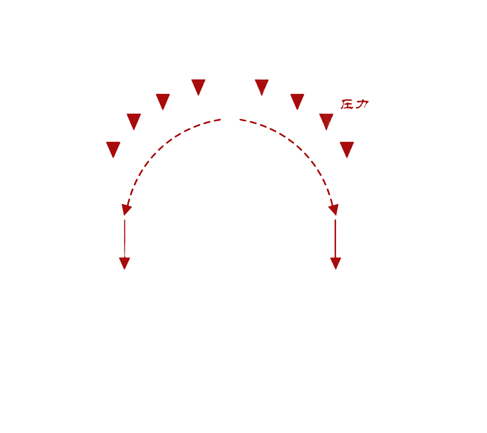
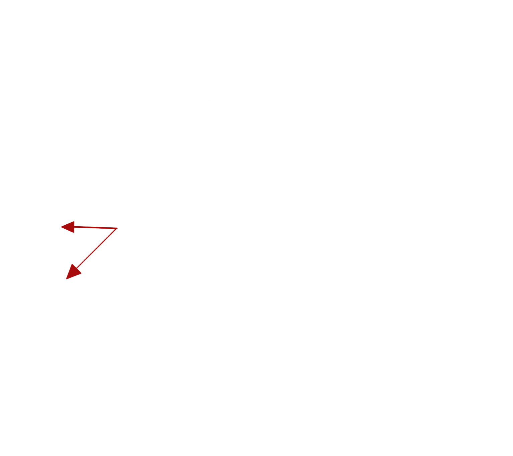
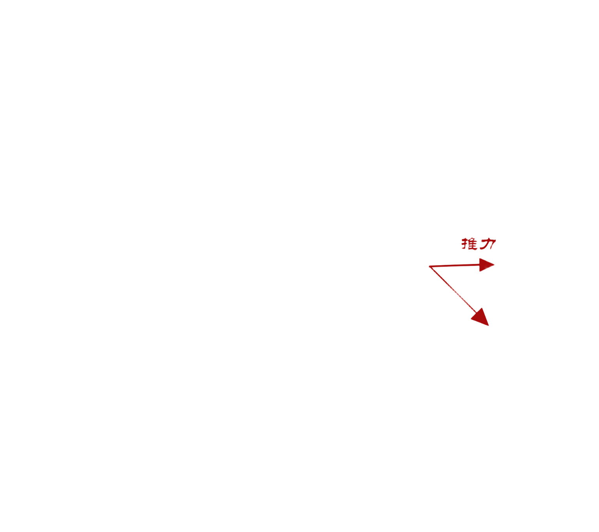

砖石拱券是中国古代重要砌筑结构，以楔形砖石砌筑成弧形拱顶，依靠相互挤压将上部荷载传递至两侧墙体，可实现 无梁大跨度空间。按曲线分为单圆心、双圆心等形制，采用“券”与“伏”交替砌筑：券为立砌受力层，伏为平砌加固层， 以“几券几伏”区分等级与强度。该技术耐压耐久、稳定性强，广泛用于城门、碑亭、隧道等建筑，是古代官式砖石营造的核心技艺。
明故宫将砖石拱券技术运用娴熟，集中体现明初皇家营造规制。午门作为大内正门采用三券三伏车棚券，规制森严、气势庄重；承天门、奉天门等宫门依等级采用二券二伏至三券三伏拱券，适配通行与威仪需求；御桥、殿宇等建筑亦按规制搭配券型与券伏层数。其拱券设计兼顾结构承重、空间功能与等级制度，是明代早期皇家砖石拱券建筑的典范。








